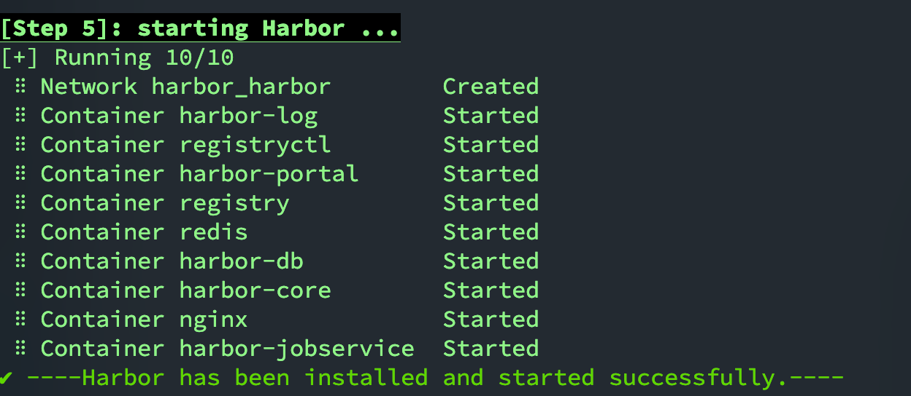

# The IP address or hostname to access admin UI and registry service. # DO NOT use localhost or 127.0.0.1, because Harbor needs to be accessed by external clients. hostname:harbor.local
# http related config # http: # # port for http, default is 80. If https enabled, this port will redirect to https port # port: 80
# https related config https: # https port for harbor, default is 443 port:443 # The path of cert and key files for nginx certificate:harbor.crt private_key:harbor.key
# # Uncomment following will enable tls communication between all harbor components # internal_tls: # # set enabled to true means internal tls is enabled # enabled: true # # put your cert and key files on dir # dir: /etc/harbor/tls/internal
# Uncomment external_url if you want to enable external proxy # And when it enabled the hostname will no longer used # external_url: https://reg.mydomain.com:8433
# The initial password of Harbor admin # It only works in first time to install harbor # Remember Change the admin password from UI after launching Harbor. harbor_admin_password:Harbor12345
# Harbor DB configuration database: # The password for the root user of Harbor DB. Change this before any production use. password:root123 # The maximum number of connections in the idle connection pool. If it <=0, no idle connections are retained. max_idle_conns:100 # The maximum number of open connections to the database. If it <= 0, then there is no limit on the number of open connections. # Note: the default number of connections is 1024 for postgres of harbor. max_open_conns:900
# The default data volume data_volume:/Users/wf09/Desktop/docker/harbor/data
# Harbor Storage settings by default is using /data dir on local filesystem # Uncomment storage_service setting If you want to using external storage # storage_service: # # ca_bundle is the path to the custom root ca certificate, which will be injected into the truststore # # of registry's and chart repository's containers. This is usually needed when the user hosts a internal storage with self signed certificate. # ca_bundle:
# # storage backend, default is filesystem, options include filesystem, azure, gcs, s3, swift and oss # # for more info about this configuration please refer https://docs.docker.com/registry/configuration/ # filesystem: # maxthreads: 100 # # set disable to true when you want to disable registry redirect # redirect: # disabled: false
# Trivy configuration # # Trivy DB contains vulnerability information from NVD, Red Hat, and many other upstream vulnerability databases. # It is downloaded by Trivy from the GitHub release page https://github.com/aquasecurity/trivy-db/releases and cached # in the local file system. In addition, the database contains the update timestamp so Trivy can detect whether it # should download a newer version from the Internet or use the cached one. Currently, the database is updated every # 12 hours and published as a new release to GitHub. trivy: # ignoreUnfixed The flag to display only fixed vulnerabilities ignore_unfixed:false # skipUpdate The flag to enable or disable Trivy DB downloads from GitHub # # You might want to enable this flag in test or CI/CD environments to avoid GitHub rate limiting issues. # If the flag is enabled you have to download the `trivy-offline.tar.gz` archive manually, extract `trivy.db` and # `metadata.json` files and mount them in the `/home/scanner/.cache/trivy/db` path. skip_update:false # # The offline_scan option prevents Trivy from sending API requests to identify dependencies. # Scanning JAR files and pom.xml may require Internet access for better detection, but this option tries to avoid it. # For example, the offline mode will not try to resolve transitive dependencies in pom.xml when the dependency doesn't # exist in the local repositories. It means a number of detected vulnerabilities might be fewer in offline mode. # It would work if all the dependencies are in local. # This option doesn’t affect DB download. You need to specify "skip-update" as well as "offline-scan" in an air-gapped environment. offline_scan:false # # insecure The flag to skip verifying registry certificate insecure:false # github_token The GitHub access token to download Trivy DB # # Anonymous downloads from GitHub are subject to the limit of 60 requests per hour. Normally such rate limit is enough # for production operations. If, for any reason, it's not enough, you could increase the rate limit to 5000 # requests per hour by specifying the GitHub access token. For more details on GitHub rate limiting please consult # https://developer.github.com/v3/#rate-limiting # # You can create a GitHub token by following the instructions in # https://help.github.com/en/github/authenticating-to-github/creating-a-personal-access-token-for-the-command-line # # github_token: xxx
jobservice: # Maximum number of job workers in job service max_job_workers:10
notification: # Maximum retry count for webhook job webhook_job_max_retry:10
chart: # Change the value of absolute_url to enabled can enable absolute url in chart absolute_url:disabled
# Log configurations log: # options are debug, info, warning, error, fatal level:info # configs for logs in local storage local: # Log files are rotated log_rotate_count times before being removed. If count is 0, old versions are removed rather than rotated. rotate_count:50 # Log files are rotated only if they grow bigger than log_rotate_size bytes. If size is followed by k, the size is assumed to be in kilobytes. # If the M is used, the size is in megabytes, and if G is used, the size is in gigabytes. So size 100, size 100k, size 100M and size 100G # are all valid. rotate_size:200M # The directory on your host that store log location:/var/log/harbor
# Uncomment following lines to enable external syslog endpoint. # external_endpoint: # # protocol used to transmit log to external endpoint, options is tcp or udp # protocol: tcp # # The host of external endpoint # host: localhost # # Port of external endpoint # port: 5140
#This attribute is for migrator to detect the version of the .cfg file, DO NOT MODIFY! _version:2.5.0
# Uncomment external_redis if using external Redis server # external_redis: # # support redis, redis+sentinel # # host for redis: <host_redis>:<port_redis> # # host for redis+sentinel: # # <host_sentinel1>:<port_sentinel1>,<host_sentinel2>:<port_sentinel2>,<host_sentinel3>:<port_sentinel3> # host: redis:6379 # password: # # sentinel_master_set must be set to support redis+sentinel # #sentinel_master_set: # # db_index 0 is for core, it's unchangeable # registry_db_index: 1 # jobservice_db_index: 2 # chartmuseum_db_index: 3 # trivy_db_index: 5 # idle_timeout_seconds: 30
# Uncomment uaa for trusting the certificate of uaa instance that is hosted via self-signed cert. # uaa: # ca_file: /path/to/ca
# Global proxy # Config http proxy for components, e.g. http://my.proxy.com:3128 # Components doesn't need to connect to each others via http proxy. # Remove component from `components` array if want disable proxy # for it. If you want use proxy for replication, MUST enable proxy # for core and jobservice, and set `http_proxy` and `https_proxy`. # Add domain to the `no_proxy` field, when you want disable proxy # for some special registry. proxy: http_proxy: https_proxy: no_proxy: components: -core -jobservice -trivy
# Trace related config # only can enable one trace provider(jaeger or otel) at the same time, # and when using jaeger as provider, can only enable it with agent mode or collector mode. # if using jaeger collector mode, uncomment endpoint and uncomment username, password if needed # if using jaeger agetn mode uncomment agent_host and agent_port # trace: # enabled: true # # set sample_rate to 1 if you wanna sampling 100% of trace data; set 0.5 if you wanna sampling 50% of trace data, and so forth # sample_rate: 1 # # # namespace used to differenciate different harbor services # # namespace: # # # attributes is a key value dict contains user defined attributes used to initialize trace provider # # attributes: # # application: harbor # # # jaeger should be 1.26 or newer. # # jaeger: # # endpoint: http://hostname:14268/api/traces # # username: # # password: # # agent_host: hostname # # # export trace data by jaeger.thrift in compact mode # # agent_port: 6831 # # otel: # # endpoint: hostname:4318 # # url_path: /v1/traces # # compression: false # # insecure: true # # timeout: 10s
# enable purge _upload directories upload_purging: enabled:true # remove files in _upload directories which exist for a period of time, default is one week. age:168h # the interval of the purge operations interval:24h dryrun:false
安装运行
harbor目录下执行
1
./install.sh
有下图所示说明启动成功

排错
FileNotFoundError:
[Errno 2] No such file or directory: '/hostfs/harbor.key'